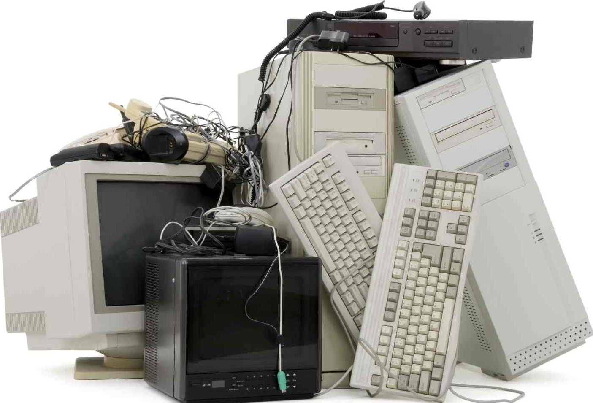

1) Мікропроцесор. Це центральний блок ПК, призначений для управління роботою всіх блоків машини і для виконання арифметичних і логічних операцій над інформацією. До складу мікропроцесора входять: пристрій керування; арифметико-логічний пристрій; мікропроцесорна пам'ять; інтерфейсна система мікропроцесора.
2) Генератор тактових імпульсів. Він генерує послідовність електричних імпульсів; частота генеруючих імпульсів визначає тактову частоту машини. Проміжок часу між сусідніми імпульсами визначає час одного такту роботи машини.
3) Системна шина. Це основна інтерфейсна система комп'ютера, що забезпечує сполучення і зв'язок всіх його пристроїв між собою. Системна шина включає в себе: кодову шину даних (КШД), що містить провідники й схеми сполучення для паралельної передачі всіх розрядів числового коду (машинного слова) операнда; кодову шину адреси (КША), що включає проведення й схеми сполучення для паралельної передачі всіх розрядів коду адреси комірки основної пам'яті або порту вводу-виводу зовнішнього пристрою; кодову шину інструкцій (КШІ), що містить проведення й схеми сполучення для передачі інструкцій (керуючих сигналів, імпульсів) у всі блоки машини; шину живлення, що має проведення й схеми сполучення для підключення блоків ПК до системи енергоживлення.
4) Основна пам'ять. Вона призначена для зберігання та оперативного обміну інформацією з іншими блоками машини. ОП містить два види запам'ятовуючих пристроїв: постійний запам'ятовуючий пристрій і оперативний запам'ятовуючий пристрій.
5) Зовнішня пам'ять. Вона відноситься до зовнішніх пристроїв ПК і використовується для довготривалого зберігання будь-якої інформації. Зокрема, у зовнішній пам'яті зберігається все програмне забезпечення компь'ютера. Зовнішня пам'ять містить різноманітні види запам'ятовуючих пристроїв, але найбільш поширеними є накопичувачі на жорстких і гнучких магнітних дисках.
6) Джерело живлення. Це блок, який містить системи автономного та мережевого енергоживлення ПК.
7) Таймер. Це внутрішній електронний годинник, що забезпечує при необхідності автоматичне зняття поточного моменту часу (рік, місяць, години, хвилини, секунди і долі секунд). Таймер підключається до автономного джерела живлення - акумулятора і при відключенні машини від мережі продовжує працювати.
8) Контролер переривань обслуговує процедури переривання, приймає запит на переривання від зовнішніх пристроїв, визначає рівень пріоритету цього запиту і видає сигнал переривання в мікропроцесор.
9) Зовнішні пристрої. Це найважливіша складова частина будь-якого обчислювального комплексу. За вартістю вони іноді становлять 50-80% всього ПК. Від складу і характеристик ЗП багато в чому залежать можливість і ефективність застосування ПК в системах управління і в народному господарстві в цілому.